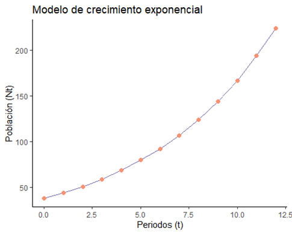
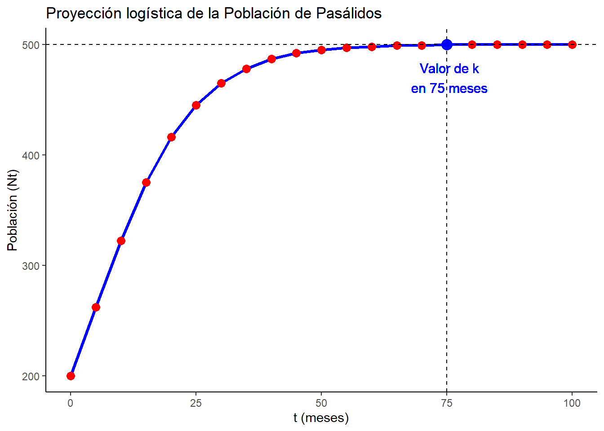
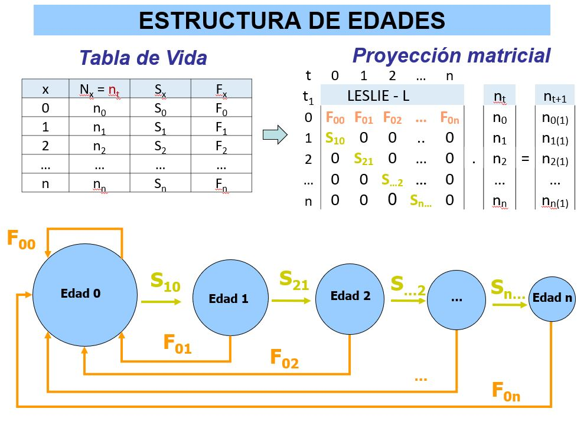
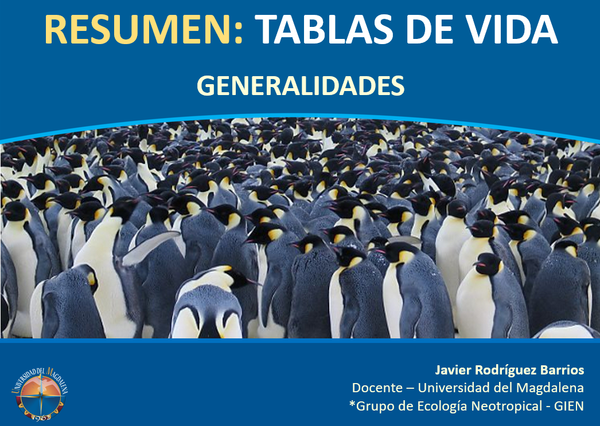
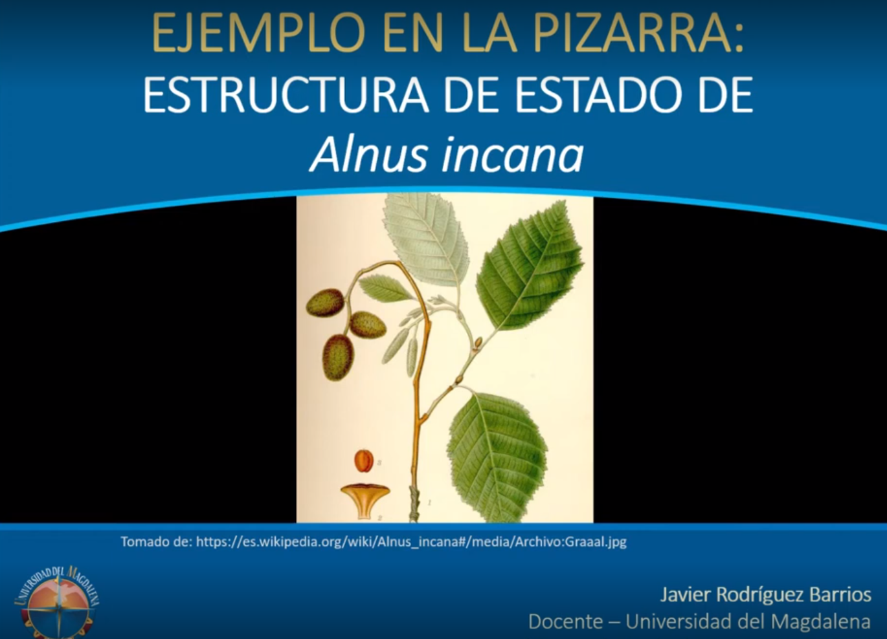

Videos de las clases
Asignatura: Ecología 1

[
Los videos que se presentan a continuación, son el resultado de sesiones realizadas a partir del 2020 hasta la fecha y se encuentran alojadas en el repositorio de videos “Stream” de la universidad.
Videos de las semanas 1 - 3
1. Análisis Climático de ecosistemas

[
Videos de la semanas 4 a 6
1. Manejo de programas Ramas y RStudio para modelos exponenciales (parte 1)

Semana 4. Taller en Clase modelos exponenciales de poblaciones (parte 1) (Eco1.Grupo1)
Semana 5. Taller en Clase modelos exponenciales de poblaciones (parte 2) (Eco1.Grupo1)
Videos de la semanas 6 a 7
1. Manejo de RStudio para modelos logísticos


Semana 6. Taller en Clase modelos logísticos de poblaciones (parte 1) (Eco1.Grupo1)
Semana 7. Taller en Clase modelos logísticos de poblaciones (parte 2) (Eco1.Grupo1)
Videos de la semanas 8 y 9
1. Tablas de vida y modelos matriciales de poblaciones

Semana 9. Taller de computo tablas de vida y matrices (parte 1) 2023-II
Semana 11. Taller de computo tablas de vida y matrices (parte 2) 2023-II
Semana 8. Sesión 1 - Ejercicio en clase con Pizarra Virtual - Tablas de vida (parte 1)
Teoría Tablas de vida

Semana 8. Sesión 1 - Tablas de vida y Modelos de estado en poblaciones
Taller pizarra - modelo de estado

Semana 9. Sesión 3 – Ejercicio en la pizarra – Modelos de estado – parte 1
Semana 9. Sesión 3 – Ejercicio en la pizarra – Modelos de estado – parte 2
Semana 9. Sesión 3 – Ejercicio en la pizarra – Modelos de estado – parte 3
Semana 9. Taller de computo tablas de vida y matrices (parte 1) 2023-II
Semana 9. Taller de computo tablas de vida y matrices (parte 2) 2023-II
Teoría Tablas de vida
Semana 8. Sesión 1 - Tablas de vida y Modelos de estado en poblaciones
Taller pizarra - modelo de estado
Semana 9. Sesión 3 – Ejercicio en la pizarra – Modelos de estado – parte 1
Semana 9. Sesión 3 – Ejercicio en la pizarra – Modelos de estado – parte 2
Semana 9. Sesión 3 – Ejercicio en la pizarra – Modelos de estado – parte 3
Videos de la semanas 10 y 11
1. Tablas de vida y modelos matriciales de Calotropis

Semana 11. Taller de cómputo. Calotropis (parte 1)
Semana 11. Taller de cómputo. Calotropis (parte 2) Pendiente
2. Tabulación de datos - salida de campo

Semana 10. Tabulación_ Datos de campo-Batimetría
Semana 10. Tabulación_ Datos de campo - Hidrología (parte 1) Objeto flotador
Semana 10. Tabulación_ Datos de campo - Hidrología (parte 2) Objeto flotador
Semana 10. Tabulación_ Datos de campo - Hidrología (parte 3) Trazador con sal
Videos de la semanas 15 a 16

[
1. Introducción a la Ecología de Comunidades
2. Taller de computo Ecología de Comunidades
Bibliografía recomendada de la Biblioteca Virtual:
Ecología (Diana Fernández, 2017) Módulo de diversidad, abundancia y estratificación

Elementos de Ecología (Thomas Smith, 2015) Módulo de Estructura de la Comunidad.

Ecología (Manuel Moles, 2019) Módulo de especies, abundancia y diversidad.